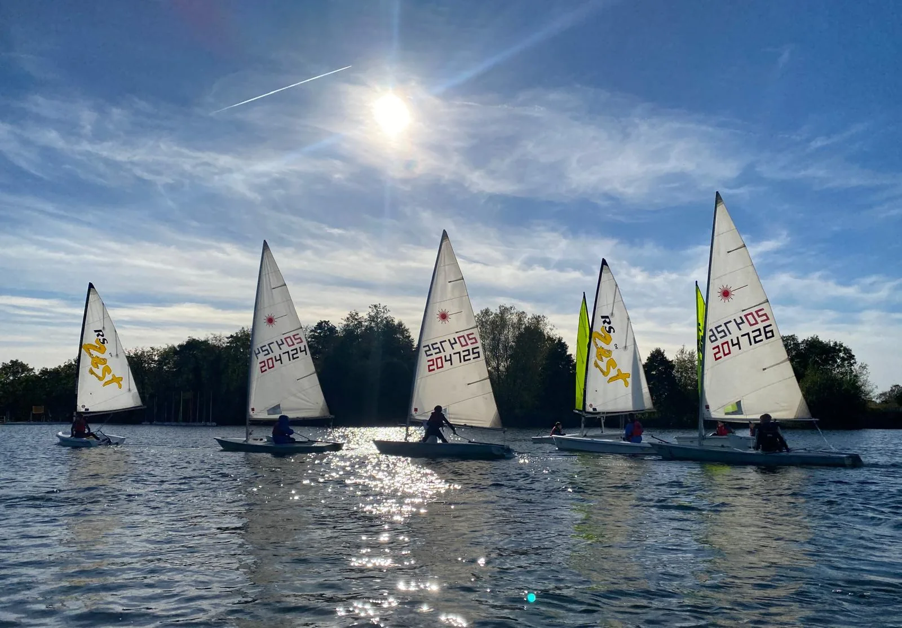
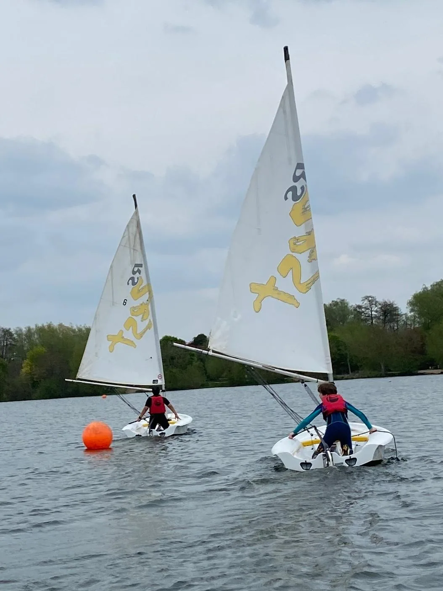

Group Leaders
Group Leaders oversee sessions and are responsible for planning and delivering sailing in line with club byelaws and venue operating procedures.
St George's Sailing Club CIC promotes and facilitates recreational sailing and related water-based activities, primarily for pupils of St George's School, Harpenden, their families, and others connected with the club's activities. We sail at Bury Lake Young Mariners in a structured, supervised and community-led environment.
We aim to support physical wellbeing, water safety skills, teamwork and personal development through sailing, while providing access to equipment, safety support, social activities and a welcoming club community.
St George's Sailing Club CIC continues the activities of the long-established St George's School Sailing Club, originally founded in 1989. Today, the club provides structured access to sailing in a supervised, family-friendly and not-for-profit setting.
The club exists to promote and facilitate recreational sailing and related water-based activities, primarily for pupils of St George's School, Harpenden, and for their families and others connected with the club's activities.
We organise weekly term-time sailing sessions during the sailing season, alongside other sessions or events as agreed. We also support sailors through informal peer-led and supervised development, and organise regattas, inter-club events and occasional social gatherings connected with club life.
The club operates as a self-managed group at Bury Lake Young Mariners and follows venue operating procedures and safety requirements. School students take priority for places, boats and volunteer capacity, while eligible siblings and other connected participants may join subject to capacity, safety and safeguarding.


Parent involvement is central to how the club works. Regular volunteers and Group Leaders help sessions run safely, while occasional helpers can support practical tasks under supervision. The club distinguishes clearly between these roles to support both safeguarding and family involvement.
Group Leaders oversee sessions and are responsible for planning and delivering sailing in line with club byelaws and venue operating procedures.
Adults helping regularly on Sundays should hold a DBS check and complete RYA Safe and Fun, or equivalent safeguarding training approved by the Directors.
Occasional helpers are welcome for practical support, but they remain under the supervision of a DBS-checked volunteer or Group Leader and are not left in sole supervision of junior sailors.
The club is strengthened by parents who help on shore, support younger sailors, assist with organisation, or contribute to the friendly and inclusive atmosphere of the day. If you would like to get involved, we would be very pleased to hear from you.
Ask how you can helpContact us if you would like to ask about sailing membership, junior participation, parent volunteering, or upcoming sessions and events. Every person taking part in sailing activities must be admitted as a Sailing Member.
Use the button below to reveal the club email address. It is assembled in the browser rather than printed directly in the page source, which offers some light protection against basic automated scraping.